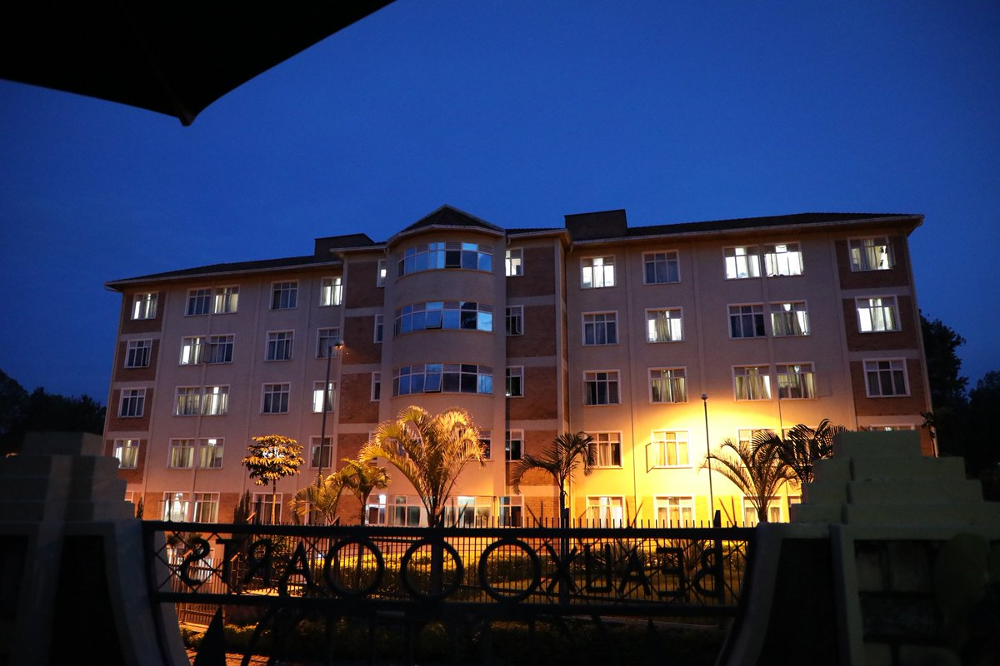

A hostel is a form of low-cost, short-term shared sociable lodging where guests can rent a bed, usually a bunk bed in a dormitory, with shared use of a lounge and sometimes a kitchen. Rooms can be mixed or single-sex and have private or shared bathrooms. Private rooms may also be available, but the property must offer dormitories to be considered a hostel.[1][2] Hostels are popular forms of lodging for backpackers, cycle tourists, and gap year travelers. They are part of the sharing economy.[3] Benefits of hostels include lower costs and opportunities to meet people from all over the world, find travel partners, and share travel ideas

Welcome message to the University Hostels
The University provides hostels to residential students (both - boys and girls). There are six hostels functioning under University of Rwanda at Nyarugenge campus ,Huye campus ,Gikondo Campus ,Rwamagana campus ,Nyagatare Campus and Busogo Campus.
Regular maintenance work is carried out in the campus annually for proper upkeep of the hostels.
NYIRAHABIMANA Theresie,
Director of students Welfare
UR - HUYE Campus